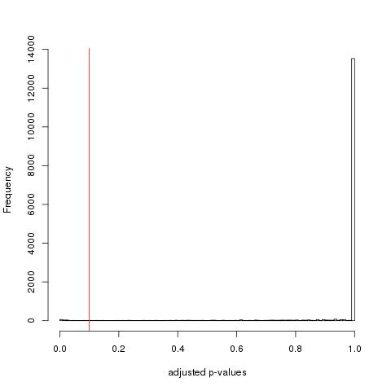

Gene Expression Analysis: "ANOVA-like test"
Samples used for normalization and dispersion estimates:
| sample | 13314_invitro_2h_GFP | 13315_invitro_2h_DL1 | 13316_invitro_4h_GFP | 13317_invitro_4h_DL1 |
| condition | VIT | VIT | VITB | VITC |
Warning: non of your conditions are replicated! This may inflate the number of false positive and false negative.
Nr of significant genes: (adjusted p-value threshold)
204( 0.1 )
Histogram of adjusted p-values

Result files
list(all genes)
list(sig. genes)
Note on the method: This "anova" is a test for any differences between several conditions. Due to the matematical proberties of the counts distributions a genaralized Linear Model (GLM) is used. No fold changes are reported. This as the number of possible comparisons increases reapidly with the number of different samples. The Galaxy tool "moderated fold changes" can be used to estimate the more robust fold changes between specific conditions (the normal fold change can easily be caluclated "by hand"/using excel)